詠騰企業官網
如何用網站降低陌生客戶的信任門檻
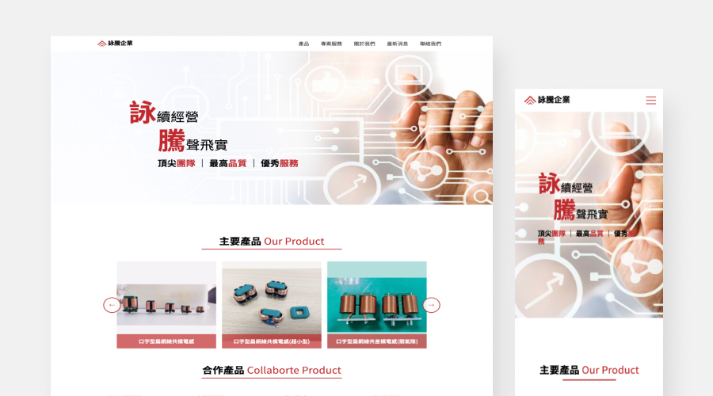
專案背景
企業過去是 PDF 與郵件作為產品介紹媒介，缺乏可被搜尋與持續曝光的品牌入口。因此在數位轉型階段，希望透過企業官網建立更完整的線上形象與潛在合作機會。
🚨 專案限制：專案初期需同時考量企業預算、後續維護成本與首次建立官網的使用習慣。
👩🏻💻 我的角色：負責專案從 0 到上線的整體規劃與執行，包含網站架構企劃、UI 設計、輕量 Design System 建立、前端切版與網站部署。
📈 預期成果：減少PDF傳遞的不易，增加曝光機會，促使聯繫意願。
Problem Framing｜問題拆解
網站不只是曝光，而是信任入口
在下方敘述的問題中，我判斷「信任感不足」是最優先需要解決的問題，因為在 B2B 情境下，使用者是否進一步聯繫，取決於第一印象的專業度。
-
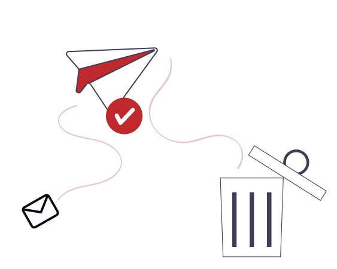
一不小心就成了垃圾郵件
未建立網站前，企業業務一直以郵件方式介紹公司，不可控的事信件變成客戶的垃圾信，因此打造一個響應式網站變的非常重要。
-
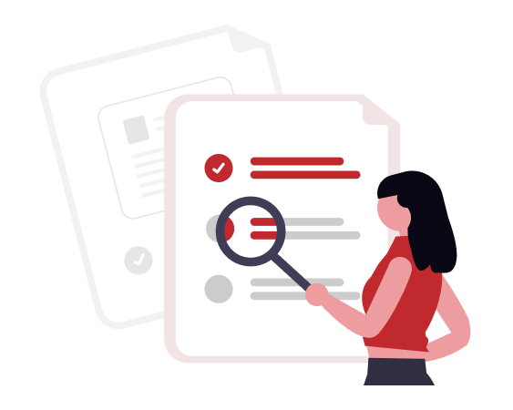
客戶無法快速理解與搜尋產品
以傳統紙本或 PDF 作為傳遞媒介，讓收到資料的客戶無法輕易找到產品，更不要說管理後的更新問題。
-
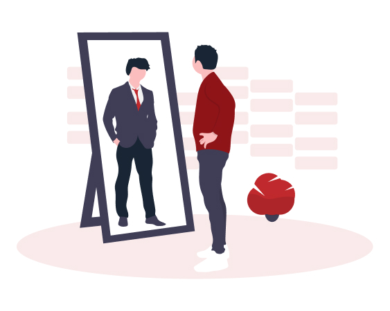
品牌缺乏專業感
過去品牌強調經驗和品質，但現在更注重第一眼的形象，因此專業感是必須建立的。
Decision & Trade-off｜設計決策
在有限預算下建立可信任的品牌入口
設計定調為信任、專業、穩重為整體概念，從建立信任的資訊平台，接著是專業的重點導覽，最後以穩重形象的視覺風格建立形象官網。
-
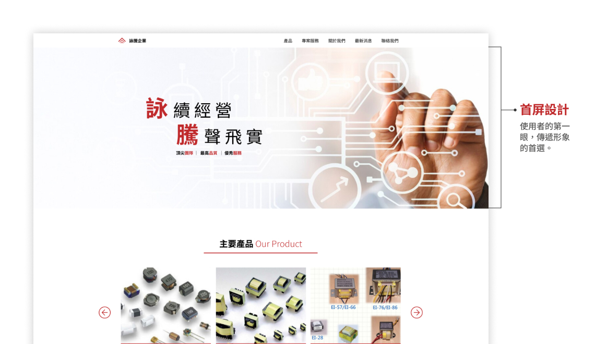
使用者最焦慮的是「不知道下一步要做什麼」
由於原先企業是透過郵件與 PDF 傳遞資訊，缺乏企業形象，因此我判斷使用者會先以企業形象為第一眼做評估，所以我將首屏以傳達品牌核心為主，而不是立即瀏覽產品內容。
-
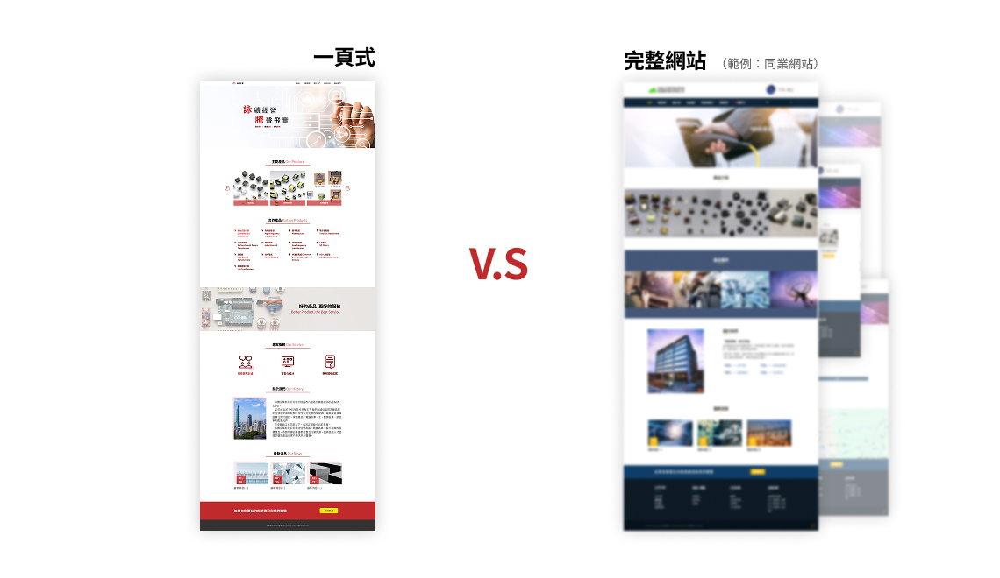
使用者最焦慮的是「不知道下一步要做什麼」
由於原先企業是透過郵件與 PDF 傳遞資訊，缺乏企業形象，因此我判斷使用者會先以企業形象為第一眼做評估，所以我將首屏以傳達品牌核心為主，而不是立即瀏覽產品內容。
-
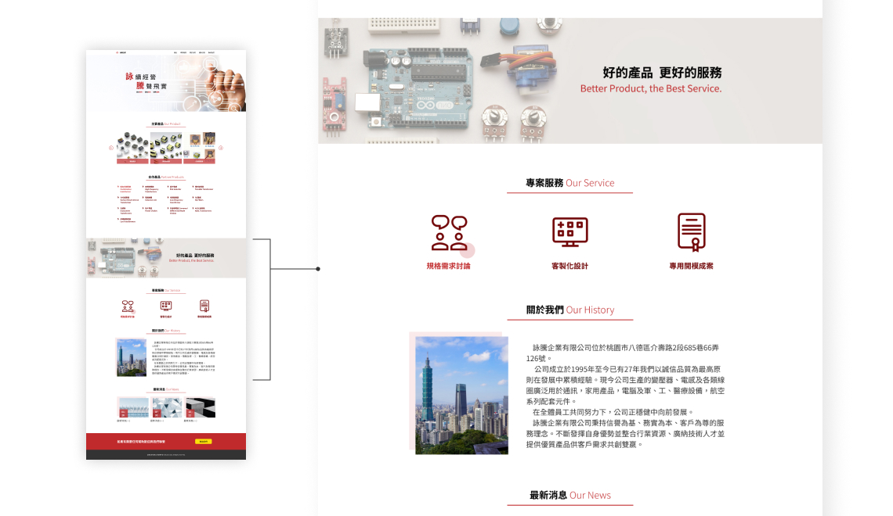
使用者最焦慮的是「不知道下一步要做什麼」
由於原先企業是透過郵件與 PDF 傳遞資訊，缺乏企業形象，因此我判斷使用者會先以企業形象為第一眼做評估，所以我將首屏以傳達品牌核心為主，而不是立即瀏覽產品內容。
Execution｜設計落地
將信任策略轉化為可被理解的瀏覽體驗
為了建立陌生客戶的信任感，我將前期決策方向轉成實際的資訊結構、頁面節奏與視覺語言，讓網站在有限內容下依然可以維持清晰與專業的瀏覽體驗。
-
IA｜一頁式架構降低維護成本，維持資訊閱讀連續性
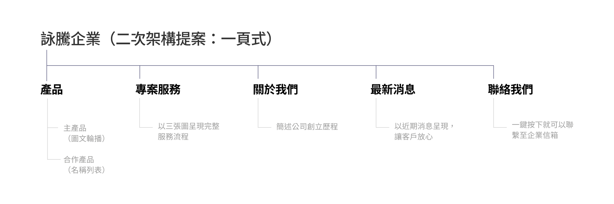
-
Wireframe｜優先建立品牌信任，而非堆疊產品資訊
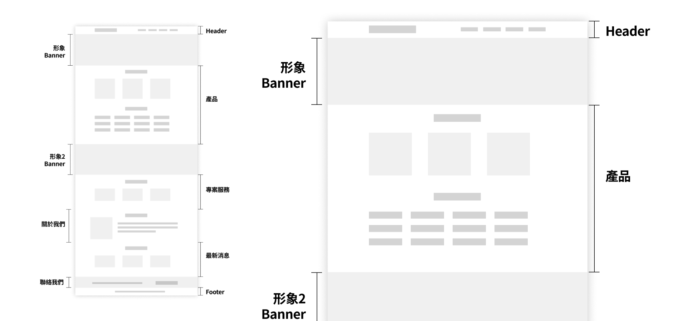
-
UI Design｜透過品牌色與版面留白維持穩重專業感
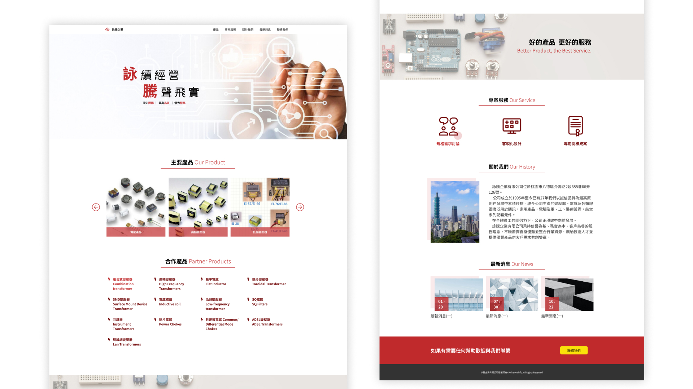
Key Screen｜關鍵畫面
讓使用者更自然地理解資訊
除了整體架構與視覺方向，我也針對資訊閱讀節奏與互動方式進行調整，降低使用者在瀏覽過程中的理解負擔與操作中斷。
-
透過輪播與列表建立產品資訊層級
這兩種呈現分類是為了要區隔企業的主要與合作品項的不同，主要產品是企業負責設計量產，因此以圖文卡片方式呈現，輪播讓主要產品在首屏持續曝光，提升使用者對核心業務的記憶點。
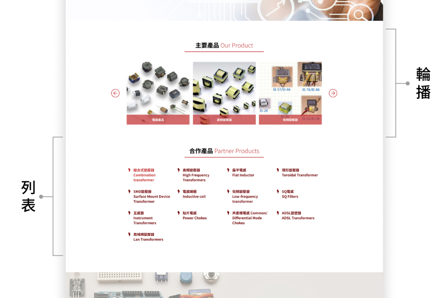
-
以互動視窗 (Modal) 降低閱讀轉跳中斷
經確認產品內容僅以重點資訊呈現，評估考量整頁式與互動視窗個別使用體驗，互動視窗是較為理想的，適合擺放簡單內容、關閉後就在首頁，不必像整頁式需要回到前一頁，提升使用者點選讀取意願。
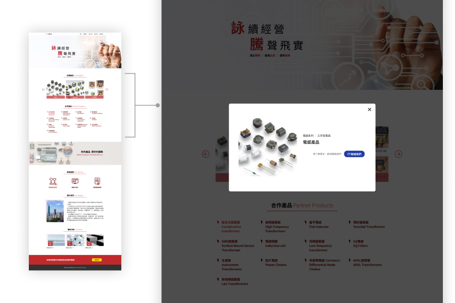
-
將 CTA 放置於瀏覽流程的最後階段
一頁式網站對於 CTA 策略是多點曝光，但考量專案以「信任感」為設計核心，為了提供良好的瀏覽體驗，將吸睛的 CTA 放置最後區塊，降低使用者被迫推銷的不舒服感。
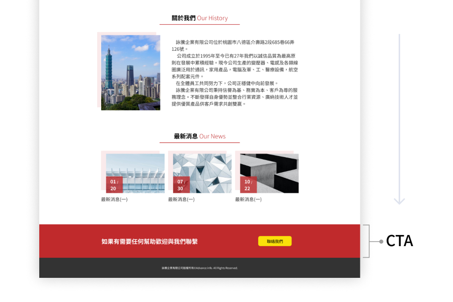
Reflection｜反思與學習
設計不是最佳解，而是限制中的平衡
由於專案沒有 PM 與工程分工，需要同時考量設計、開發與後續維護成本，因此讓我意識到，網頁設計不是只是解決畫面問題，而是在商業目標、使用者體驗與現實限制之間做出平衡與取捨。
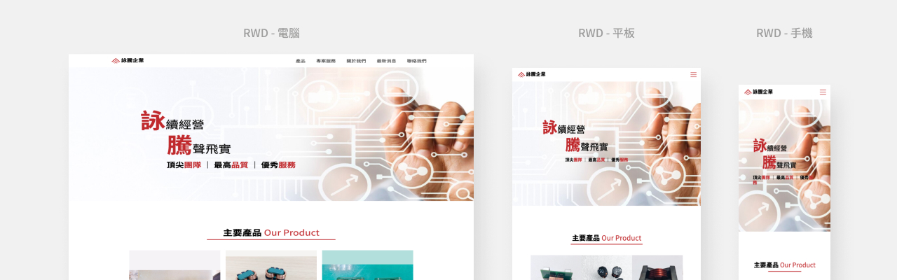
沒有實際用戶驗證
網站完成上線後驚覺沒有辦法分析使用者，因初期沒有將 google GA 引入，這會讓網站陷入在我與企業美好的使用想像中，無法利用數據替網站做後續優化。
提前驗證 RWD 能降低開發成本
由於專案是斜槓接案，無網站企劃、前端工程，因此自己一手包辦，省略響應式的 Prototype 設計，將此測試移至前端運作，以至於多花時間思考響應式切版。 google GA 引入，這會讓網站陷入在我與企業美好的使用想像中，無法利用數據替網站做後續優化。
一頁式策略與長效成效的取捨
在競品分析中多數企業以完整官網作為基礎，儘管資料顯少都是採取完整分類，考量企業對於建立後的維護擔憂、行銷宣傳的不確定、官網建立預算考量，才簡化成一頁式規模，讓我抱有官網成效的不確定性。 google GA 引入，這會讓網站陷入在我與企業美好的使用想像中，無法利用數據替網站做後續優化。